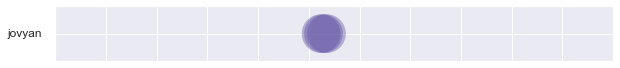

Contents
import os
import re
import sqlalchemy
class Activity():
def __init__(self):
self.prefix = '/srv'
self.user = os.environ.get('JUPYTERHUB_USER') or 'jovyan'
self.users = list(self._users())
self.engine = sqlalchemy.create_engine('sqlite:///jovyan.db')
def _users(self):
pat = re.compile(r"^u\d{6}\w$") # OUID
if os.path.isdir(self.prefix):
yield from filter(pat.match, os.listdir(self.prefix))
else:
yield from ()
act=Activity()
act.user
'jovyan'
from datetime import datetime as dt
class Activity(Activity):
def _logfile(self,
user=os.environ.get('JUPYTERHUB_USER') or 'jovyan',
date=dt.now().strftime('%Y%m%d')):
if os.path.isdir(self.prefix) and os.access(self.prefix, os.W_OK):
prefix=self.prefix+('/'+user)
if not os.path.exists(prefix):
os.makedirs(prefix)
else:
prefix='.'
return prefix+'/'+date+'.log'
def _logfiles(self, sfx="", user=os.environ.get('JUPYTERHUB_USER') or 'jovyan'):
if os.path.isdir(self.prefix):
prefix=self.prefix+('/'+user)
else:
prefix='.'
if os.path.isdir(prefix):
pat = re.compile(r"^(\d{8})"+sfx+r"\.log$")
for f in os.listdir(prefix):
r = pat.search(f)
if r:
yield r.group(1)
yield from ()
act=Activity()
[user for user in act._users()]
[]
act._logfile().replace('.log', '-exc.log')
'./20220529-exc.log'
list(set(act._logfiles(sfx='-nbg')))
['20220527', '20220516', '20220517', '20220524']
qry
'select * from {table}'
import pandas as pd
import datetime
class Activity(Activity):
def activity(self, user=os.environ.get('JUPYTERHUB_USER') or 'jovyan'):
qry_tmpl = '''select * from {table}'''
qry = qry_tmpl.format(**dict(table='nbgrader'))
try:
df = pd.read_sql(qry, self.engine,
parse_dates=['index'])
df.set_index('index', drop=True, inplace=True)
df.index.name = 'time'
latest_index = df.index.to_pydatetime()[-1]
except sqlalchemy.exc.SQLAlchemyError:
latest_index = dt.min
print(latest_index)
pat = re.compile(r'(\d{4})-(\d{2})-(\d{2}) (\d{2}):(\d{2}):(\d{2}).*:summary: \((\d+), (\d+), (\d+)\)')
for d in sorted(list(set(act._logfiles(sfx='-nbg')))):
try:
with open(self._logfile(date=d).replace('.log','-nbg.log'), 'r') as f:
for l in f:
r = pat.search(l)
if r:
dy, dm, dd, th, tm, ts, c, p, f = (int(s) for s in r.groups())
d = datetime.datetime(dy, dm, dd, th, tm, ts)
#print(pd.Timestamp(d), c, p, f)
if d > latest_index and (int(p)+int(f))> 0:
#ts_data = np.array((1.,(3*p+f)/(p+f)))
#df_new = pd.DataFrame([ts_data])
#df_new.index = [pd.Timestamp(d)]
df_new = pd.DataFrame([[1., (3*p+f)/(p+f)]],
columns=["y", "pass"],
index=[pd.Timestamp(d)])
df_new.to_sql('nbgrader', self.engine, if_exists='append')
except:
pass
act=Activity()
act._logfile(date='20220517').replace('.log', '-nbg.log')
'./20220517-nbg.log'
act.activity()
0001-01-01 00:00:00
from datetime import datetime
datetime(2022,5,24,0,0,0)
datetime.datetime(2022, 5, 24, 0, 0)
qry_tmpl = '''select * from {table} where "index" between :dstart and :dfinish'''
qry = qry_tmpl.format(**dict(table='nbgrader'))
df = pd.read_sql(qry, act.engine,
parse_dates=['index'],
params={'dstart': datetime(2022,5,24,0,0,0),
'dfinish': datetime(2022,5,24,23,59,59)})
df.set_index('index', drop=True, inplace=True)
df.index.name = 'time'
df
| y | pass | |
|---|---|---|
| time | ||
| 2022-05-24 13:46:20 | 1.0 | 3.0 |
| 2022-05-24 14:29:54 | 1.0 | 3.0 |
| 2022-05-24 14:50:09 | 1.0 | 3.0 |
| 2022-05-24 14:50:18 | 1.0 | 3.0 |
| 2022-05-24 14:55:00 | 1.0 | 3.0 |
dt.min
datetime.datetime(1, 1, 1, 0, 0)
class Activity(Activity):
def activity2(self, user=os.environ.get('JUPYTERHUB_USER') or 'jovyan'):
pat = re.compile(r"^#\[Out\]#")
def _register(d, r):
df = pd.DataFrame([r],
columns = ["user","y","script"],
index=[pd.Timestamp(d)])
#df.to_sql('nbgrader', self.engine, if_exists='append')
print(df)
for d in sorted(list(set(act._logfiles()))):
try:
with open(self._logfile(date=d), 'r') as f:
lp, dp = "", dt.min
for line in f:
try:
dc = dt.strptime(line, "# %a, %d %b %Y %H:%M:%S ")
if lp and dp > dt.min:
_register(dp, [user,1.,lp])
lp, dp = "", dc
except:
if not pat.match(line):
lp+=line
else:
_register(dp, [user,1.,lp])
#print('EOF')
except:
pass
act=Activity()
act.activity2()
user y script
2022-04-25 14:52:08 jovyan 1.0 path\n
user y script
2022-04-25 14:53:43 jovyan 1.0 path.replace('.log','-exc.log')\n
user y script
2022-04-25 14:53:55 jovyan 1.0 path.replace('.log$','-exc.log')\n
user y \
2022-04-25 14:55:28 jovyan 1.0
script
2022-04-25 14:55:28 # [python - cannot override sys.excepthook - S...
user y script
2022-04-25 14:55:32 jovyan 1.0 _showtraceback.__module__\n
user y \
2022-04-25 14:55:32 jovyan 1.0
script
2022-04-25 14:55:32 IPython.core.interactiveshell.InteractiveShell...
user y script
2022-04-25 14:55:33 jovyan 1.0 1/0\n
user y \
2022-04-25 14:56:57 jovyan 1.0
script
2022-04-25 14:56:57 # [python - cannot override sys.excepthook - S...
user y script
2022-04-25 14:56:58 jovyan 1.0 _showtraceback.__module__\n
user y \
2022-04-25 14:56:59 jovyan 1.0
script
2022-04-25 14:56:59 IPython.core.interactiveshell.InteractiveShell...
user y script
2022-04-25 14:57:00 jovyan 1.0 1/0\n
user y script
2022-04-26 09:05:52 jovyan 1.0 path.replace('.log','-exc.log')\n
user y \
2022-04-26 09:05:53 jovyan 1.0
script
2022-04-26 09:05:53 # [python - cannot override sys.excepthook - S...
user y script
2022-04-26 09:05:54 jovyan 1.0 _showtraceback.__module__\n
user y \
2022-04-26 09:05:55 jovyan 1.0
script
2022-04-26 09:05:55 IPython.core.interactiveshell.InteractiveShell...
user y script
2022-04-26 09:05:56 jovyan 1.0 1/0\n
user y script
2022-05-27 16:20:50 jovyan 1.0 import math\nimport itertools\n
user y \
2022-05-27 16:20:50 jovyan 1.0
script
2022-05-27 16:20:50 def generate_p(i_max=2, j_max=2, k_max=2):\n ...
user y \
2022-05-27 16:20:50 jovyan 1.0
script
2022-05-27 16:20:50 def generate_p(i_max=2, j_max=2, k_max=2):\n ...
user y script
2022-05-27 16:20:50 jovyan 1.0 sorted(generate_p())\n
user y \
2022-05-27 16:20:50 jovyan 1.0
script
2022-05-27 16:20:50 list(itertools.product(range(2),range(2),range...
user y \
2022-05-27 16:20:50 jovyan 1.0
script
2022-05-27 16:20:50 import itertools\n\ndef generate_p(i_max=2, j_...
user y script
2022-05-27 16:20:50 jovyan 1.0 sorted(generate_p())\n
user y \
2022-05-27 16:20:50 jovyan 1.0
script
2022-05-27 16:20:50 [2**i * 3**j * 5**k for i,j,k in itertools.pro...
user y \
2022-05-27 16:20:50 jovyan 1.0
script
2022-05-27 16:20:50 pp = itertools.product(generate_p(), generate_...
user y \
2022-05-27 16:20:50 jovyan 1.0
script
2022-05-27 16:20:50 pp = itertools.product(generate_p(), repeat=2)...
user y \
2022-05-27 16:20:50 jovyan 1.0
script
2022-05-27 16:20:50 pq = []\nfor p, q in itertools.product(generat...
user y \
2022-05-27 16:20:50 jovyan 1.0
script
2022-05-27 16:20:50 pq = []\nfor p, q in itertools.product(generat...
user y \
2022-05-27 16:20:50 jovyan 1.0
script
2022-05-27 16:20:50 sorted(pq, reverse=True, key=lambda x: x[0]/x[...
user y \
2022-05-27 16:20:50 jovyan 1.0
script
2022-05-27 16:20:50 len(list(itertools.product(generate_p(), repea...
user y \
2022-05-27 16:20:50 jovyan 1.0
script
2022-05-27 16:20:50 len(list(filter(lambda x: x[0]>x[1], itertools...
user y \
2022-05-27 16:20:50 jovyan 1.0
script
2022-05-27 16:20:50 import math\nlen(list(filter(lambda x: x[0]>x[...
user y \
2022-05-27 16:20:50 jovyan 1.0
script
2022-05-27 16:20:50 len(list(itertools.product(generate_p(4,3,5), ...
user y \
2022-05-27 16:20:50 jovyan 1.0
script
2022-05-27 16:20:50 len(list(filter(lambda x: x[0]>x[1], itertools...
user y \
2022-05-27 16:20:50 jovyan 1.0
script
2022-05-27 16:20:50 import math\nlen(list(filter(lambda x: x[0]>x[...
user y \
2022-05-27 16:20:50 jovyan 1.0
script
2022-05-27 16:20:50 import math\nlen(list(filter(lambda x: x[0]/x[...
user y \
2022-05-27 16:20:50 jovyan 1.0
script
2022-05-27 16:20:50 import math\nlist(filter(lambda x: x[0]/x[1] >...
user y \
2022-05-27 16:20:50 jovyan 1.0
script
2022-05-27 16:20:50 def plimpton322(i_max=2, j_max=2, k_max=2):\n ...
user y script
2022-05-27 16:20:50 jovyan 1.0 plimpton322()\n
user y script
2022-05-27 16:20:50 jovyan 1.0 plimpton322(4,3,2)\n
user y \
2022-05-27 16:20:50 jovyan 1.0
script
2022-05-27 16:20:50 for p, q in plimpton322(4,3,2):\n a = 2 * p...
user y \
2022-05-27 16:20:50 jovyan 1.0
script
2022-05-27 16:20:50 import pandas as pd\nimport requests\n\nres = ...
user y \
2022-05-27 16:20:53 jovyan 1.0
script
2022-05-27 16:20:53 import numpy as np\nimport pandas as pd\nfrom ...
user y \
2022-05-27 16:20:53 jovyan 1.0
script
2022-05-27 16:20:53 df = pd.DataFrame(l, columns=['(b+d)/a', '(b-d...
user y script
2022-05-27 16:20:53 jovyan 1.0 df\n
user y \
2022-05-27 16:20:53 jovyan 1.0
script
2022-05-27 16:20:53 from nose.tools import assert_equal, assert_tr...
user y script
2022-05-27 16:20:53 jovyan 1.0 assert_equal(plimpton322(), [(2, 1)])\n
user y \
2022-05-27 16:20:53 jovyan 1.0
script
2022-05-27 16:20:53 assert_equal(plimpton322(4,3,2), [(12, 5), (9,...
user y script
2022-05-27 16:21:12 jovyan 1.0 2 * * 3\n
user y \
2022-05-27 18:19:32 jovyan 1.0
script
2022-05-27 18:19:32 # initialization for my classroom\nimport os\n...
user y \
2022-05-27 19:21:04 jovyan 1.0
script
2022-05-27 19:21:04 # initialization for my classroom\nimport os\n...
user y \
2022-05-27 19:52:05 jovyan 1.0
script
2022-05-27 19:52:05 # initialization for my classroom\nimport os\n...
user y \
2022-05-27 22:04:49 jovyan 1.0
script
2022-05-27 22:04:49 # initialization for my classroom\nimport os\n...
user y \
2022-05-27 22:59:42 jovyan 1.0
script
2022-05-27 22:59:42 # initialization for my classroom\nimport os\n...
user y \
2022-05-27 23:44:30 jovyan 1.0
script
2022-05-27 23:44:30 # initialization for my classroom\nimport os\n...
user y \
2022-05-28 10:51:12 jovyan 1.0
script
2022-05-28 10:51:12 # initialization for my classroom\nimport os\n...
user y \
2022-05-28 11:26:41 jovyan 1.0
script
2022-05-28 11:26:41 # initialization for my classroom\nimport os\n...
user y \
2022-05-28 12:51:20 jovyan 1.0
script
2022-05-28 12:51:20 # initialization for my classroom\nimport os\n...
user y \
2022-05-28 13:48:21 jovyan 1.0
script
2022-05-28 13:48:21 # initialization for my classroom\nimport os\n...
user y \
2022-05-28 16:07:42 jovyan 1.0
script
2022-05-28 16:07:42 # initialization for my classroom\nimport os\n...
user y \
2022-05-28 18:19:33 jovyan 1.0
script
2022-05-28 18:19:33 # initialization for my classroom\nimport os\n...
user y \
2022-05-28 21:51:47 jovyan 1.0
script
2022-05-28 21:51:47 # initialization for my classroom\nimport os\n...
user y \
2022-05-28 22:54:48 jovyan 1.0
script
2022-05-28 22:54:48 # initialization for my classroom\nimport os\n...
user y \
2022-05-28 22:55:10 jovyan 1.0
script
2022-05-28 22:55:10 # initialization for my classroom\nimport os\n...
user y \
2022-05-29 10:09:44 jovyan 1.0
script
2022-05-29 10:09:44 # initialization for my classroom\nimport os\n...
user y \
2022-05-29 12:16:06 jovyan 1.0
script
2022-05-29 12:16:06 # initialization for my classroom\nimport os\n...
df_new = pd.DataFrame([[1, "tako"]])
print(df_new)
0 1
0 1 tako
if len("tako")>0:
print("ika")
ika
act._logfile(date='20220425')
'./20220425.log'
len("")
0
inspector = sqlalchemy.inspect(act.engine)
inspector.get_table_names()
['nbgrader']
import asyncio
async def handler(signum, frame):
print("helo")
from timeout_decorator import timeout, TimeoutError
import time
@timeout(3)
def l():
while True:
print('tick')
time.sleep(1)
try:
l()
except TimeoutError:
pass
tick
tick
tick
from time import sleep
from threading import Timer
def timeout():
print("Tick")
t = Timer(3.0, timeout)
t.start()
for _ in range(10):
t.cancel()
print('tick')
t = Timer(3.0, timeout)
t.start()
sleep(5)
print('Tock')
tick
tick
tick
tick
tick
tick
tick
tick
tick
tick
Tick
Tock
df.iloc[:,1].values
array([3., 3., 3., 3., 1., 3., 3., 3., 3.])
import matplotlib.pyplot as plt
import seaborn as sns
sns.set()
def plot_ax(ax, user=os.environ.get('JUPYTERHUB_USER') or 'jovyan'):
df = pd.read_sql('''select * from nbgrader''',
act.engine, parse_dates=['index'])
df.set_index('index', drop=True, inplace=True)
df.index.name = 'time'
if len(df)>0:
cmap = plt.cm.Spectral
ax.scatter(
x=df.index, y=df['y'].values,
c=df['pass'].values, s=df['pass'].values*500,
cmap='Spectral',
alpha=0.4, edgecolor='none'
)
ax.set_ylabel(user, rotation=0, ha="right", va="center")
from datetime import date
from datetime import time
fig = plt.figure(figsize=(10,1))
ax = fig.add_subplot(1,1,1)
plt.setp(ax, xlim=(pd.Timestamp(dt.combine(date.today(),time(dt.now().hour-10,))),
pd.Timestamp(dt.combine(date.today(),time(dt.now().hour,59,59)))))
plt.setp(ax, ylim=(0,2))
plt.setp(ax, xticklabels=[])
plt.setp(ax, yticklabels=[])
plot_ax(ax)
